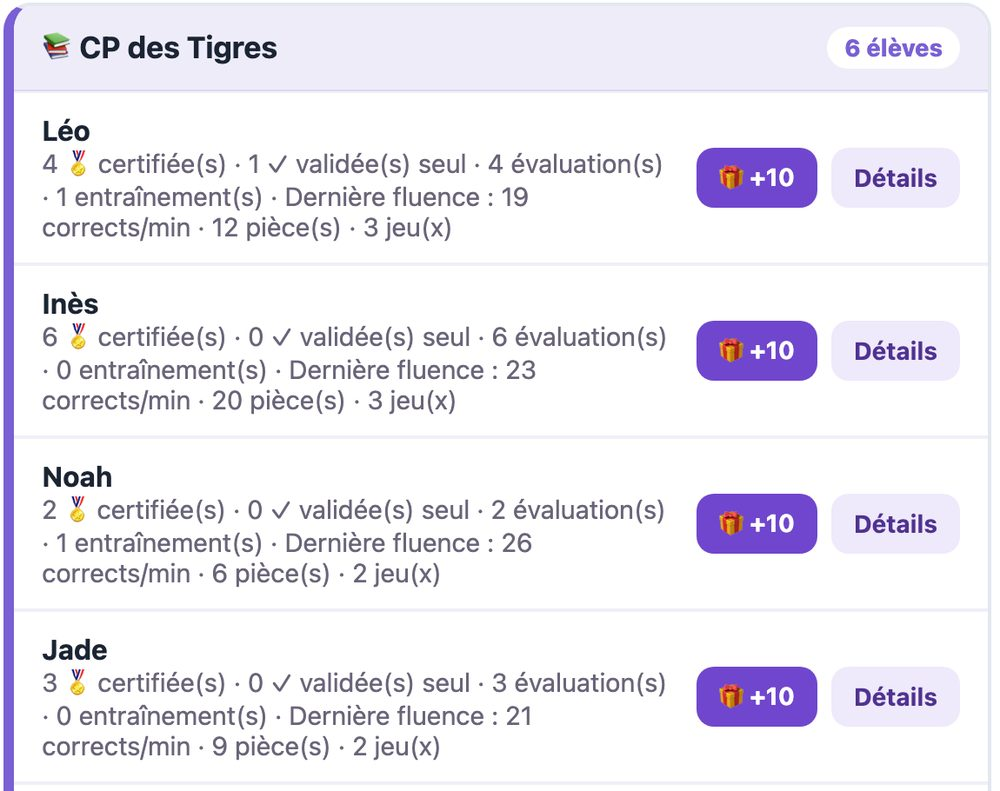

La lecture devient une aventure.
Des activités de lecture et d’écoute pour les élèves de CP, un zoo qui grandit avec leurs progrès et un suivi simple pour l’enseignant.
Gratuit pour les enseignants · démo sans inscription
Comment ça marche ?
Je m’entraîne
Lecture de syllabes, de mots et de textes, activités d’écoute
Mon zoo grandit
L’enseignant certifie les étapes et les animaux évoluent
Je gagne des récompenses
Des pièces et des parties encouragent les efforts
Un suivi simple pour l’enseignant
Le tableau de progression montre où en est chaque élève, d’un coup d’œil.

- 🎛️Adapter les contenus et l’ordre des sons.
- 📈Suivre les résultats de chaque élève.
- 🎧Évaluer en direct ou utiliser les lectures enregistrées localement.
- 🖨️Préparer les connexions grâce aux fiches imprimables.
Conçu par un enseignant de CP
Enseignant de CP depuis plusieurs années, il me fallait un outil efficace, flexible et surtout adopté par les élèves. Aucun outil abordable utilisant la syllabique ne le proposait. Tous mes élèves en sont fans !
Les réponses pratiques
De quel matériel a-t-on besoin ?
D’un navigateur récent, sur une tablette, un ordinateur ou un téléphone, avec une connexion internet. Rien à installer. Pour la lecture enregistrée, l’appareil doit avoir un micro : l’élève l’autorise la première fois.
Comment fonctionnent les évaluations ?
De deux façons. En direct : l’enseignant écoute la minute de lecture de l’élève et la valide. Ou à distance : l’élève lit seul en s’enregistrant et l’enseignant écoute et note plus tard. Quand l’objectif est atteint, l’étape est certifiée et l’animal évolue. Les enregistrements audio restent sur l’appareil de l’élève : ils ne sont pas envoyés sur internet.
Les élèves ont-ils besoin d’un compte ?
Non. Ils entrent avec le code de la classe, leur pseudo et leur code secret. Pas d’adresse e-mail, pas de nom de famille.
Que deviennent les données des élèves ?
Le Zoo garde la progression de chaque élève (scores, animaux, pièces) sous son pseudo. Les données sont stockées sur des serveurs en France, sans publicité ni revente. L’enseignant peut supprimer un élève ou une classe à tout moment. Tous les détails sont dans la page Confidentialité.
C’est gratuit ? Combien de places ?
Oui, c’est gratuit pour les enseignants. Un nouveau compte accueille 3 élèves pour essayer ; on peut ensuite demander des places supplémentaires depuis l’espace enseignant.
Envie de voir le Zoo de l’intérieur ?
La démo se visite en 2 minutes, sans compte et sans rien envoyer.
✨ Essayer sans inscription